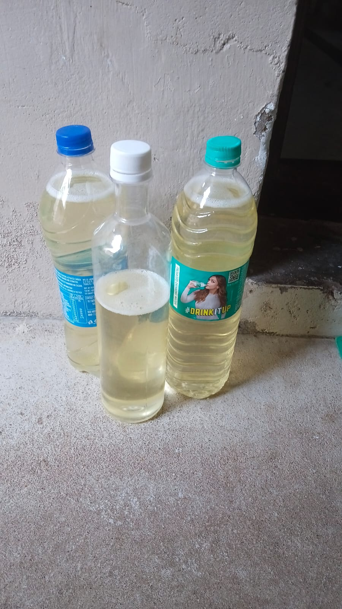
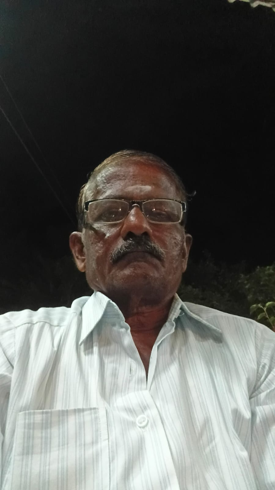
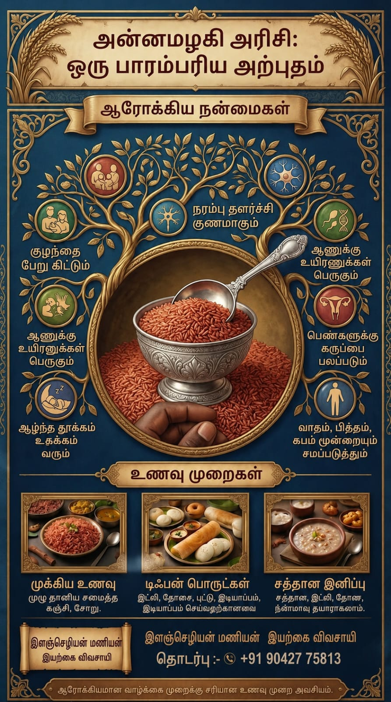
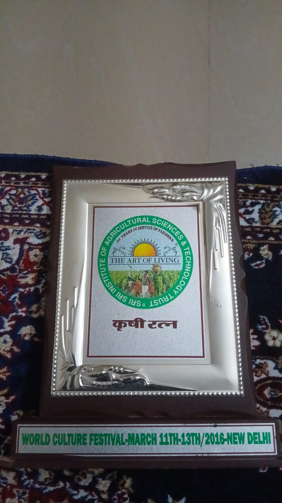
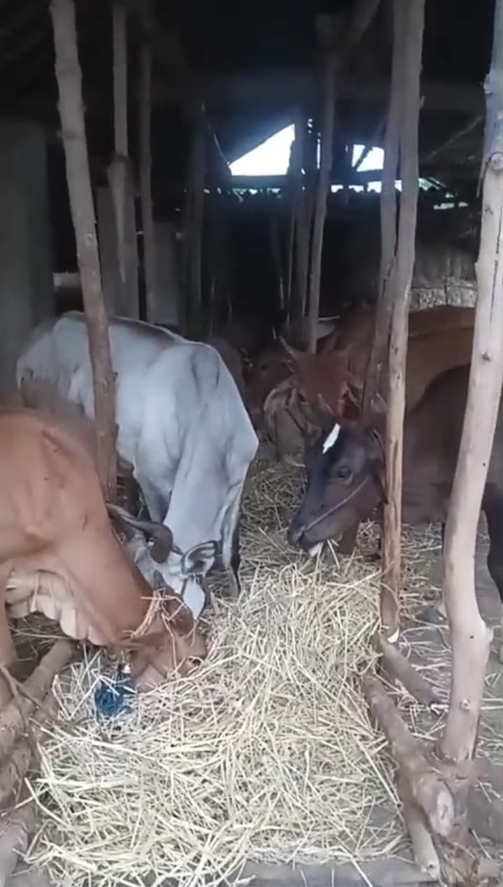
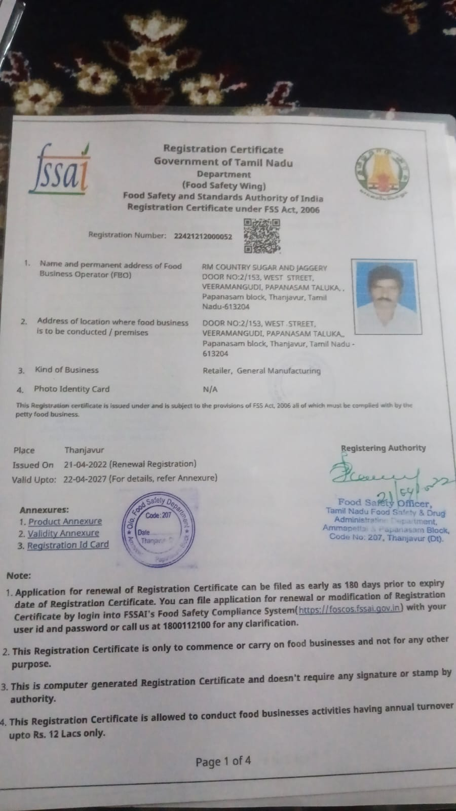
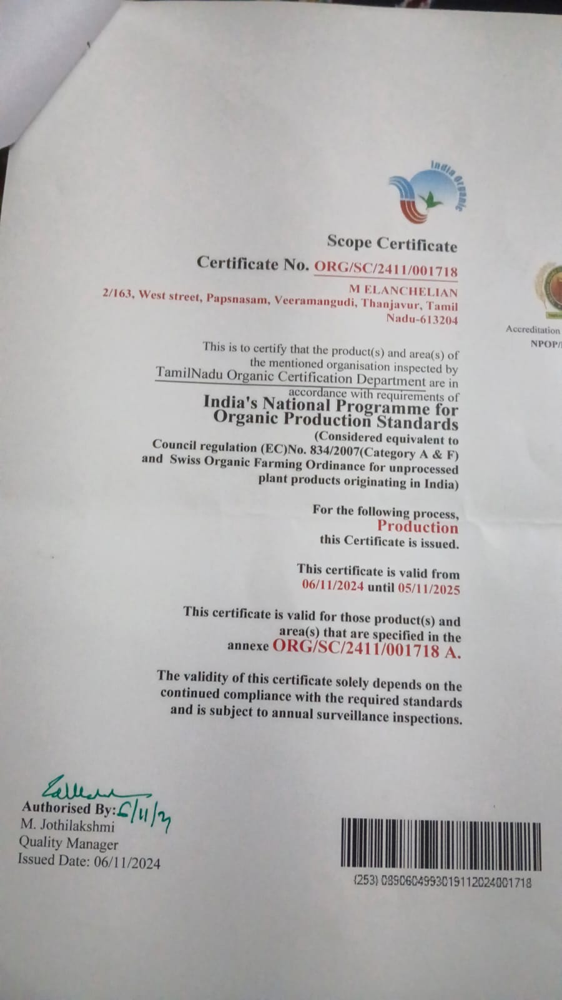

எங்கள் பொருட்கள்

மாப்பிள்ளை சம்பா அரிசி

தூயமல்லி அரிசி

மைசூர் மல்லி அரிசி

நாட்டு சர்க்கரை

அச்சு வெல்லம்

மாப்பிள்ளை சம்பா அவல்

15+ ஆண்டுகளாக இயற்கை விவசாயத்தில் ஈடுபட்டு வரும் பாரம்பரிய விவசாயி நம்மாழ்வார் வழியில் 15 ஆண்டுகளுக்கும் மேலான இயற்கை விவசாய அனுபவம்

இயற்கை விவசாயி திரு. இளஞ்செழியன் மணியன் அவர்கள் கடந்த 15 ஆண்டுகளுக்கும் மேலாக இயற்கை விவசாயத்தில் ஈடுபட்டு வருகிறார்.
இயற்கை வேளாண் முன்னோடியான நம்மாழ்வார் அவர்களின் சிந்தனைகள் மற்றும் வழிகாட்டுதலின் அடிப்படையில் எந்தவித இரசாயன உரங்களும் பயன்படுத்தாமல் இயற்கை முறையில் விவசாயம் செய்து வருகிறார்.
நெல், கரும்பு, வாழை, திணை உள்ளிட்ட பல்வேறு பயிர்கள் இயற்கை முறையில் சாகுபடி செய்யப்படுகின்றன.
ஆண்டுகள் அனுபவம்
இயற்கை விவசாயம்
பசுமாடுகள்
பயிர் வகைகள்



இயற்கை விவசாயத்தில் சிறப்பாக செயல்பட்டதற்காக பெற்ற அங்கீகாரம்.



விவசாய சேவைக்காக "The Art Of Living" அமைப்பின் பாராட்டு பெற்றவர்.


📞 +91 90427 75813
✉️ elanchelianmanian@gmail.com
வாட்ஸ்அப்பில் தொடர்பு கொள்ள